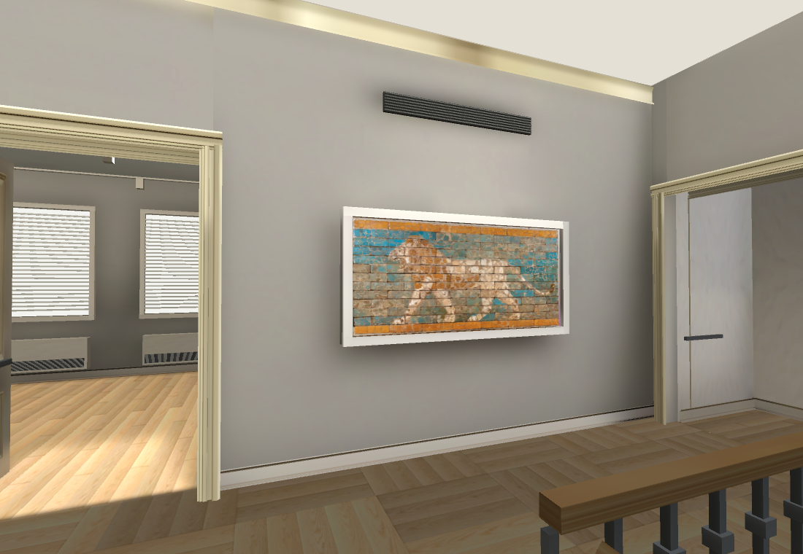
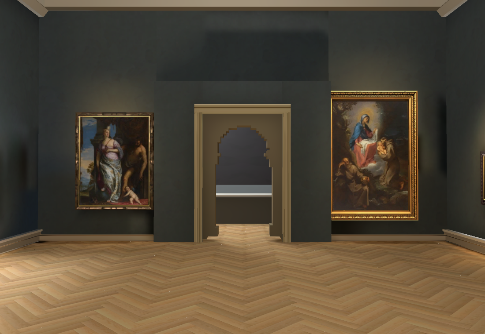
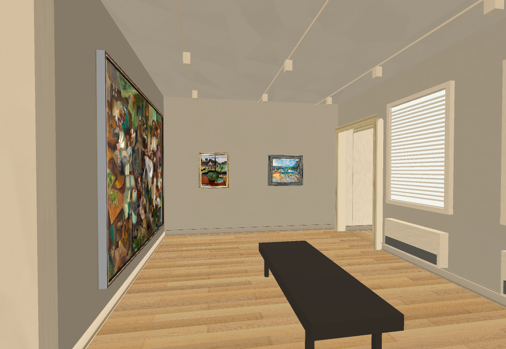
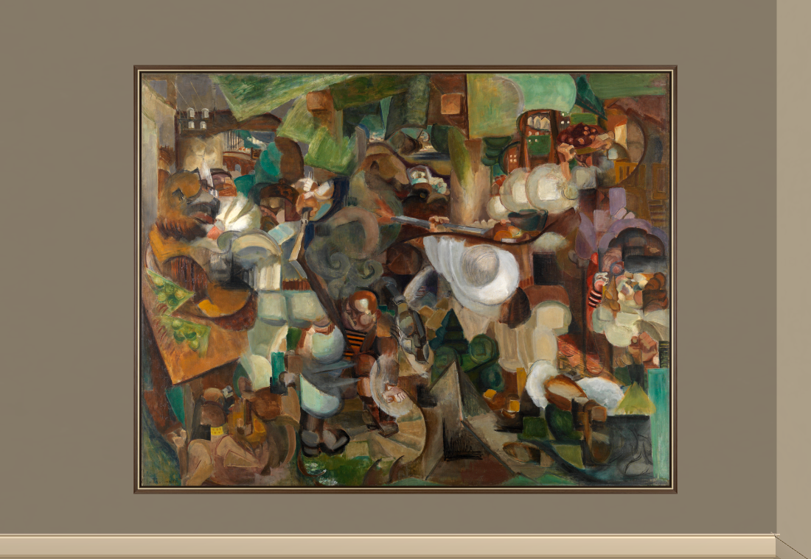
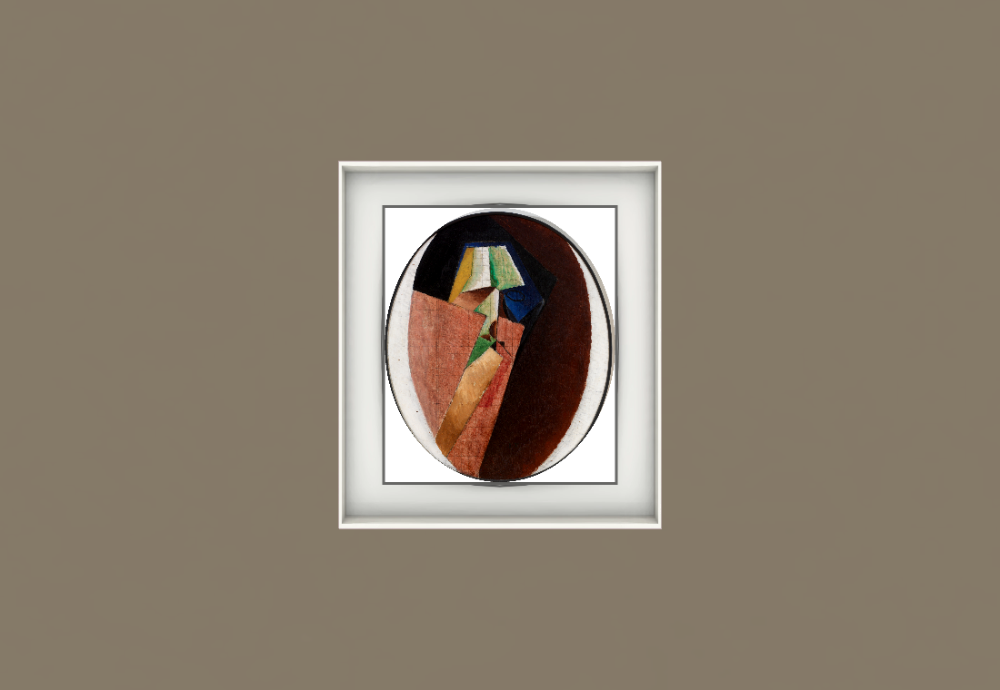

RISD Collection reconstruction
Progress checked 1 October 2026, 08:38 EDT / 12:38 UTC. Collection map only. Reconstruction remains unfinished.
Open the working walkable build Source comparisons and checks
WASD to walk; Space resets; 2 European gallery, 3 French gallery, 4 modern gallery, 5 stair landing. The working link is the tested v47 build. The three draft pictures below show newer local work that is awaiting its bake and browser validation.
| Area | Current progress | Still needed |
|---|
| Main Hall | Existing 23 paintings, visitor, frames, lighting and shaders retained in the connected prototype. | Verify overall room scale and adjoining doorway alignment against held-out wide shots. |
| Rockefeller / European galleries | Room shells, doors, furniture, mirrors, bookcase and display studies connected. | Missing objects, fine details, case contents and exact object positions. |
| French / Renaissance / medieval rooms | Connected room studies, verified paintings/panels, portal, cases, grille and stair-door group. | Unfinished objects and case contents; sculpture damage fidelity, lighting and measured room fit. |
| Lion landing | Three distinct doors, floor opening, preliminary stairs/rails, original lion front, new Muse plaster, mount and vent studies. | Landing roof, curved flights and destinations, chair rack, lion brick relief and exact offsets. |
| Modern painting room | Published: four original artworks, windows/blinds, bench and softer lighting. Local draft: fifth verified painting and dedicated Matisse/Villon/Mountaineers Muse frames. | Correct draft Villon border artifact; bake and validate. Gold seated figure/case and exact layout remain unfinished. |
| Other stairs, sculpture rooms and auditorium | All supplied footage surveyed; objects and architecture inventoried. Some sculpture-room shells exist. | Substantial reconstruction remains, including staircase geometry, auditorium seating/stage/equipment and unseen room connections. |
Evidence: all ten original videos are available; 2,485 survey frames are recorded. None of the ten video regions is marked fully reconstructed. No completion percentage is claimed.
Working build

Published v47: corrected lion wall placement, source-protected original front and Muse plaster. Metres and individual brick relief remain provisional.
Published v47: Main Hall presentation retained.New local work — awaiting publication

Local v48b: Le Fauconnier's Mountaineers Attacked by Bears1995.043 now fills its filmed wall; five original modern artworks have dedicated Muse frame studies. Source order is retained; exact offsets remain provisional.
Original RISD image with the new narrow frame study. Official museum record.
Villon draft: oval art is retained, but a rectangular border introduced by frame assembly is wrong and is being corrected. This is not an accepted finished asset.Validation and spend
Published v47: 174/174 browser navigation/camera checks and keyboard walking passed, no browser errors. Owning Shell46/50 with four existing failures. Repository checks pass. Full native60fps, metric layout and complete stair traversal remain unverified.
Local v48b: import, native render and repository checks passed; the three shown images were inspected. It has not yet completed its light bake or browser playtest. Three new OpenRouter Muse outputs cost $0.03; recorded cumulative spend is $0.84 actual / $0.85 conservative.
Next: correct the Villon border, bake and validate the five-painting modern room, then reconstruct the gold seated figure/case and refine stair, doorway and object placement from the footage. There is no external blocker. This session is the sole worker; heartbeat is disabled. 3D Viewer remains untouched.
Dated status record